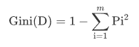
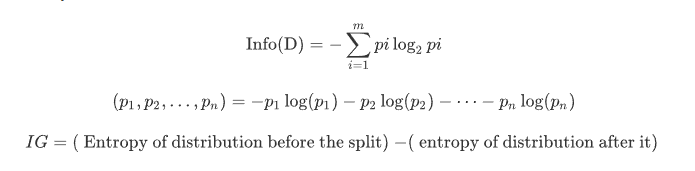

Decision Tree menggunakan Sklearn¶
Pengertian Decision Tree¶

Decision tree merupakan suatu metode klasifikasi yang menggunakan struktur pohon, dimana setiap node merepresentasikan atribut dan cabangnya merepresentasikan nilai dari atribut, sedangkan daunnya digunakan untuk merepresentasikan kelas. Node teratas dari decision tree*ini disebut dengan *root.
Dalam mengklasifikasikan data, model prediksi menggunakan struktur pohon/ berhirarki ini memiliki kemampuan untuk mem-break-down proses pengambilan keputusan yang kompleks menjadi simpel. Pengambilan keputusan akan lebih menginterpretasikan solusi dari permasalahan.
Semakin banyak cabang pada pohon keputusan maka akan semakin banyak rule (aturan). Pembahasan pada halaman ini akan melihat bagaimana Decision Tree dapat diimplementasikan dengan library "Scikit-Learn Python".
Konsep Decision Tree¶
Decision Tree adalah salah satualgoritma paling kuat dan populer. Algoritma decision-tree termasuk dalam kategori algoritma pembelajaran terawasi. Ia bekerja untuk variabel output kontinuitas maupun kategoris.

- Root Node: Ini mewakili seluruh populasi atau sampel dan ini selanjutnya dibagi menjadi dua atau lebih set homogen.
- Splitting: Ini adalah proses membagi sebuah node menjadi dua atau lebih sub-node.
- Decision Node: Ketika sebuah sub-node terbagi menjadi beberapa sub-node, maka itu disebut simpul keputusan (decision node).
- Leaf/ Terminal Node: Node tanpa anak (tanpa pemisahan lebih lanjut) disebut Leaf atau Terminal node.
- Pruning: Ketika kita mengurangi ukuran pohon keputusan dengan menghapus node (kebalikan dari Splitting), proses ini disebut pemangkasan (pruning).
- Branch / Sub-Tree: Subbagian pohon keputusan disebut cabang (Branch) atau sub-pohon.( Sub-Tree)
- Parent and Child Node: Sebuah node, yang dibagi menjadi beberapa sub-node disebut parent node dari sub-node dimana sebagai sub-node adalah anak dari node induk
Algoritma Decision Tree¶
- Tempatkan atribut terbaik dari dataset kami di akar pohon.
- Membagi set pelatihan menjadi himpunan bagian. Subset harus dibuat sedemikian rupa sehingga setiap subset berisi data dengan nilai yang sama untuk suatu atribut.
- Ulangi langkah 1 dan langkah 2 pada setiap subset sampai Anda menemukan simpul daun di semua cabang pohon.
Saat membangun classifier pohon keputusan, dapat meningkatkan akurasinya dengan menyetelnya dengan parameter yang berbeda. Dalam memprediksi data dengan metode Decision Tree menggunakan salah satu dari 2 kriteria yaitu “gini index” atau “information gain”.
Gini Index¶
Rumus Gini Index :

Indeks Gini adalah metrik untuk mengukur seberapa sering elemen yang dipilih secara acak akan diidentifikasi secara salah. Itu berarti atribut dengan indeks gini yang lebih rendah harus lebih disukai.
Information Gain¶
Rumus Information Gain :

Information Gain adalah ukuran ketidakpastian variabel acak, itu mencirikan ketidakmurnian dari kumpulan contoh yang sewenang-wenang. Semakin tinggi entropi, semakin banyak konten informasinya.
Kelebihan Dan Kekurangan¶
Kelebihan¶
- Fleksibel untuk memilih fitur dari internal node yang berbeda, fitur yang terpilih akan membedakan suatu kriteria dibandingkan kriteria yang lain dalam node yang sama. Kefleksibelan metode pohon keputusan ini meningkatkan kualitas keputusan yang dihasilkan jika dibandingkan ketika menggunakan metode penghitungan satu tahap yang lebih konvensional.
- Dalam analisis multivariat, dengan kriteria dan kelas yang jumlahnya sangat banyak, seorang penguji biasanya perlu untuk mengestimasikan baik itu distribusi dimensi tinggi ataupun parameter tertentu dari distribusi kelas tersebut. Metode pohon keputusan dapat .
- Fleksibel untuk memilih fitur dari internal node yang berbeda, fitur yang terpilih akan membedakan suatu kriteria dibandingkan kriteria yang lain dalam node yang sama. Kefleksibelan metode pohon keputusan ini meningkatkan kualitas keputusan yang dihasilkan jika dibandingkan ketika menggunakan metode penghitungan satu tahap yang lebih konvensional Dalam analisis multivariat, dengan kriteria dan kelas yang jumlahnya sangat banyak, seorang penguji biasanya perlu untuk mengestimasikan baik itu distribusi dimensi tinggi ataupun parameter tertentu dari distribusi kelas tersebut. Metode pohon keputusan dapat
Kekurangan¶
- Terjadi overlap terutama ketika kelas-kelas dan criteria yang digunakan jumlahnya sangat banyak. Hal tersebut juga dapat menyebabkan meningkatnya waktu pengambilan keputusan dan jumlah memori yang diperlukan.
- Pengakumulasian jumlah eror dari setiap tingkat dalam sebuah pohon keputusan yang besar.
- Kesulitan dalam mendesain pohon keputusan yang optimal.
- Hasil kualitas keputusan yang didapatkan dari metode pohon keputusan sangat tergantung pada bagaimana pohon tersebut didesain.
Implementasi Program¶
Import Library¶
seperti program program sebelumnya, hal pertama yang kia lakukan adalah import semua library yang kita butuhkan nantinya. adapun libary library nya sebagai berikut :
import pandas as pd from sklearn.tree import DecisionTreeClassifier from sklearn import model_selection from sklearn import metrics from sklearn.model_selection import train_test_split from sklearn.tree import export_graphviz from sklearn.externals.six import StringIO import pydotplus from IPython.display import Image
Load Dataset¶
selanjutnya kita akan mengambil dataset kita, disini saya menggunakan library pandas untuk mengimport dataset yang akan kita gunakan nantinya. untuk melihat file berhasil di import kita akan mencetak data tersebut setelahnya. berikut kode nya :
#memuat file csv
df=pd.read_csv('abalone.csv')
#menampilkan data
print("Informasi Data\n")
print("Jumlah Data : ", len(df))
print ("Dimensi Data : ",df.shape)
print ("Dataset :")
print(df.head())
print('\n')
Memilah Data¶
jika data sudah sukses terimport, selanjutnya kita akan memilah data ke beberapa bagian seperti data yang akan d jadikan testing, training, dan yang akan dijadikan classnya. di sini saya menggunakan 15 data untuk testingnya dan data kolom pertama sebagai classnya. berikut kodenya :
#splitting dataset ke training dan testing train, test = train_test_split(df, test_size = 0.1,random_state=1234) #mencari hasil print(train.shape) print(test.shape) # Dataset validasi dataset array = df.values X = array[:,1:8] Y = array[:,0] # Sepertiga data sebagai bagian dari set tes validation_size = 15 seed = 7 X_train, X_validation, Y_train, Y_validation = model_selection.train_test_split(X, Y, test_size=validation_size, random_state=seed)
Tampil Hasil Pemilahan Data¶
selanjutnya kita akan menampilkan hasil pemilahan data kita. sebagai berikut :
#mencari hasil print(X_train.shape) print(Y_train.shape) print(X_validation.shape) print(Y_validation.shape)
Prediksi Data Menggunakan Library scikit lear metode Decision Tree Entropy¶
setelah semua persiapan selesai kita akan membuat program yang akan memprediksi class dari suatu data menggunakan library scikit learn yang ada pada python. seperti jdulnya, kali ini saya menggunakan metode decision Tree Entropy. hal yang pertama adalah membuat sebuah folder yang berisi fungsi dari scikit learn. baru setelah itu kita bua prediksi. silahkan lihat kode berikut untuk lebih jelasnya.
entropy= DecisionTreeClassifier(criterion="entropy",random_state=1234)
#learning
entropy.fit(X_train,Y_train)
#Prediksi
prediction=entropy.predict(X_validation)
#mengevaluasi(Accuracy)
print("Accuracy:",metrics.accuracy_score(prediction,Y_validation))
#evaluation(Confusion Metrix)
print("Confusion Metrix:\n",metrics.confusion_matrix(prediction,Y_validation))
Menampilkan Pohon Data¶
seperti judulnya, prediksi ini menggunakan pohon keputusan sebagai metode prediksinya. python menyediakan sebuah fungsi untuk menmapilkan pohon ini. adapun kodenya sebagai berikut :
feature_cols=['Length','Diameter','Height','Whole weight','Shucked weight','Viscera weight','Shell weight']
dot_data = StringIO()
export_graphviz(entropy, out_file=dot_data,
filled=True, rounded=True,
special_characters=True,feature_names = feature_cols,class_names=['M','F','I'])
graph = pydotplus.graph_from_dot_data(dot_data.getvalue())
graph.write_png('entropy.png')
Image(graph.create_png())
Menampilkan Hasil Prediksi Data Entropy¶
adapun cara menampilkan hasil prediksi kita adalah sebagai berikut :
print("Hasil prediksi menngunakan entropy")
#Membentuk kembali diperlukan untuk melakukan penggabungan
pred_clf_df = pd.DataFrame(prediction.reshape(15,1))
#Ganti nama kolom untuk menunjukkan prediksi
pred_clf_df.rename(columns={0:'Prediction'}, inplace=True)
#membentuk kembali dataset uji
X_validation_df = pd.DataFrame(X_validation.reshape(15 ,8))
#menggabungkan dua bingkai data panda di atas kolom untuk membuat dataset prediksi
pred_outcome = pd.concat([X_validation_df, pred_clf_df], axis=1, join_axes=[X_validation_df.index])
pred_outcome.rename(columns = {0:'Length',1:'Diameter',2:'Height',3:'Whole weight',4:'Shucked weight',5:'Viscera weight',6:'Shell weight',7:'Rings'}, inplace=True)
#cetak 10 baris prediksi akhir
print((pred_outcome).head(15))
print ("\n")
#mengevaluasi(Accuracy)
print("Accuracy:",metrics.accuracy_score(prediction,Y_validation))
Prediksi Data Menggunakan Library scikit lear metode Decision Tree Gini¶
selanjutnya kita akan membuat program prediksi menggunakan library scikit learn decision tree Gini . adapun caranya sama seperti decision tree. yang membedakannya adalah criterionnya. kita tinggal mengubahnya menjadi gini. lebih jelasnya lihat kode berikut :
gini= DecisionTreeClassifier(criterion="gini",random_state=1234)
#learning
gini.fit(X_train,Y_train)
#Prediksi
prediction_gini=gini.predict(X_validation)
#mengevaluasi(Accuracy)
print("Accuracy:",metrics.accuracy_score(prediction_gini,Y_validation))
#evaluation(Confusion Metrix)
print("Confusion Metrix:\n",metrics.confusion_matrix(prediction_gini,Y_validation))
Menampilkan Pohon Data¶
feature_cols=['Length','Diameter','Height','Whole weight','Shucked weight','Viscera weight','Shell weight']
dot_data = StringIO()
export_graphviz(gini, out_file=dot_data,
filled=True, rounded=True,
special_characters=True,feature_names = feature_cols,class_names=['M','F','I'])
graph = pydotplus.graph_from_dot_data(dot_data.getvalue())
graph.write_png('gini.png')
Image(graph.create_png())
Menampilkan Hasil Prediksi Data Gini¶
berikut cara menampilkan hasil prediksi data. hampir sama denganmpenampilan prediksi sebelumnya.
print("Hasil prediksi menngunakan gini")
#Membentuk kembali diperlukan untuk melakukan penggabungan
pred_clf_df = pd.DataFrame(prediction_gini.reshape(15,1))
#Ganti nama kolom untuk menunjukkan prediksi
pred_clf_df.rename(columns={0:'Prediction'}, inplace=True)
#membentuk kembali dataset uji
X_validation_df = pd.DataFrame(X_validation.reshape(15 ,8))
#menggabungkan dua bingkai data panda di atas kolom untuk membuat dataset prediksi
pred_outcome = pd.concat([X_validation_df, pred_clf_df], axis=1, join_axes=[X_validation_df.index])
pred_outcome.rename(columns = {0:'Length',1:'Diameter',2:'Height',3:'Whole weight',4:'Shucked weight',5:'Viscera weight',6:'Shell weight',7:'Rings'}, inplace=True)
#cetak 10 baris prediksi akhir
print((pred_outcome).head(15))
print ("\n")
#mengevaluasi(Accuracy)
print("Accuracy:",metrics.accuracy_score(prediction_gini,Y_validation))
adapun prediksi decision tree menggunakan entropy maupun gini sama saja. yang membedakannya adalah akurasi dari pada metode tersebut. untuk melihat akurasi syntax kodenya adalah sebgai berikut. silhkan ketik pada program anda :
print("Accuracy:",metrics.accuracy_score(prediction_gini,Y_validation))
Referensi¶
- sklearn.tree.DecisionTreeClassifier. di https://scikit-learn.org/stable/modules/generated/sklearn.tree.DecisionTreeClassifier.html
- Avinash Navlani. 2018. ,Decision Tree Classification in Python di https://www.datacamp.com/community/tutorials/decision-tree-classification-python
- Dafni Sidiropoulou Velidou., 2018. Interactive Visualization of Decision Trees with Jupyter Widgets di https://towardsdatascience.com/interactive-visualization-of-decision-trees-with-jupyter-widgets-ca15dd312084
- Rishabh Jain., 2017. Decision Tree. It begins here. di https://medium.com/@rishabhjain_22692/decision-trees-it-begins-here-93ff54ef134
- Decision Tree - Classification dihttps://www.saedsayad.com/decision_tree.htm